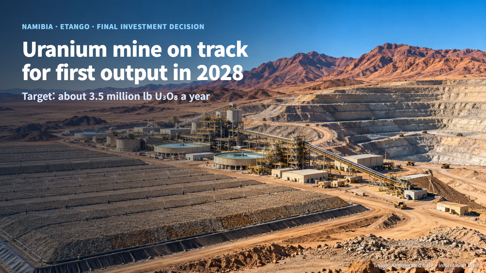
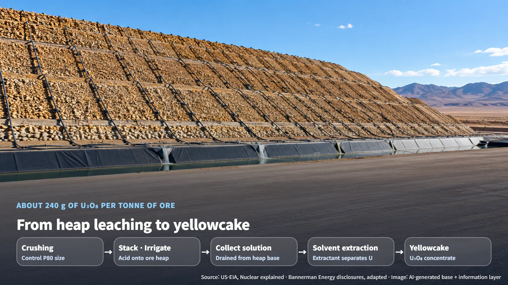
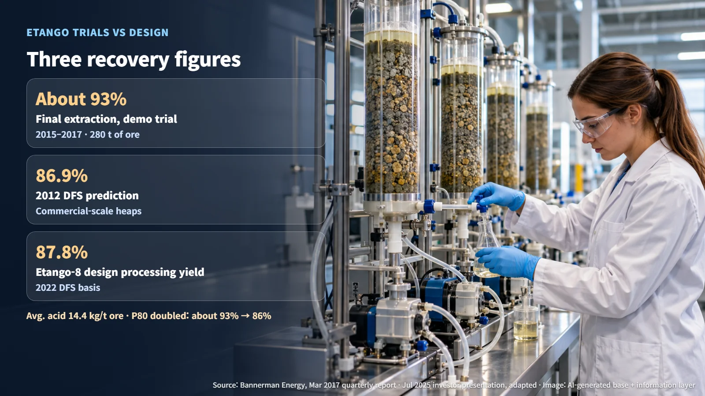
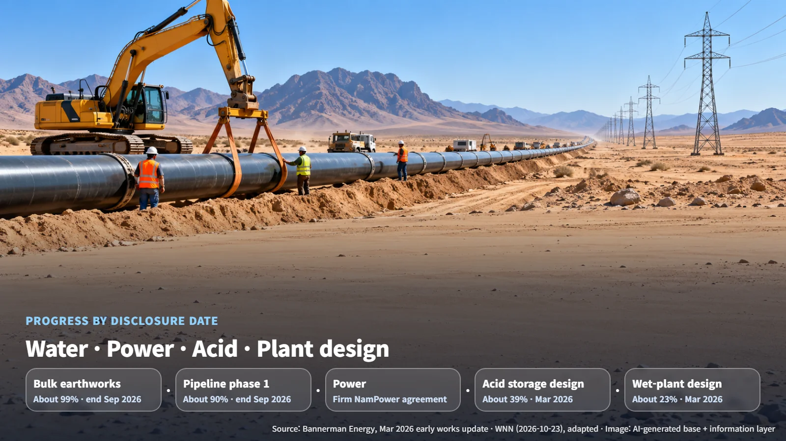

Namibia · Uranium Mining
Namibia's Etango Uranium Mine: From Final Investment Decision to First Production in 2028
Bannerman Energy's final investment decision moves the Etango heap leach project into full-scale construction, with commissioning and first yellowcake targeted for 2028.
Nuclear power plant fuel starts as rock in the ground. So how much uranium does a tonne of that rock actually contain? At Namibia's Etango mine, the design basis puts it at about 240 g of U₃O₈ per tonne of ore. Let's follow how that small amount is gathered into a uranium concentrate known as "yellowcake," and the steps this mine will work through on the way to first production in 2028.

What the Final Investment Decision Sets in Motion
On October 23, 2026, Australia's Bannerman Energy announced a Final Investment Decision (FID) for the Etango joint venture in Namibia's Erongo Region. An FID is the point at which a developer commits to funding construction. The joint venture is owned 55% by Bannerman and 45% by CNNC Overseas, and the joint venture holds 95% of the mine project. Following early works, the project now moves into full-scale construction over the coming months.
The base design is "Etango-8." Using open-pit mining (digging down from the surface) and acid heap leaching, it plans to produce an average of about 3.5 million pounds of U₃O₈ per year, with a peak of 4.1 million pounds per year. The target is commissioning and first yellowcake production in 2028. A 6.7-million-pound expansion case comes from a separate concept study; this FID covers the base-scale Etango-8 project.
Pre-production capital expenditure is estimated at about US$353 million (±10%), which includes about US$64 million of early spending through the end of September 2026. The remaining spend will be funded from cash held by the joint venture, and Bannerman says it has also secured its share of remaining working capital from its own cash. The FID launches main construction, and production results will come into view after commissioning in 2028.
Dissolving Uranium Out of an Ore Heap: Heap Leaching
Etango-8 is designed to process 8 million tonnes of ore per year. The average feed grade is 240 ppm U₃O₈. Ppm means parts per million, so 240 ppm corresponds to about 240 g of U₃O₈ per tonne of ore.
The U.S. Energy Information Administration (EIA) describes heap leaching as a process in which an acid solution is sprayed onto heaps of crushed ore to dissolve the uranium, and the solution is then collected from beneath the heap. Picture an acid solution soaking into a large heap of ore and trickling down through it. The principle resembles drip coffee: pour water over the grounds, and the dissolved components drip out below.

The step that picks uranium out of the collected solution is solvent extraction. The uranium-bearing solution is brought into contact with an extractant, which separates and recovers the uranium. The uranium concentrate produced by the refining step that follows is yellowcake, generally expressed as U₃O₈. The design value for recovery across this whole process is the processing yield, which for Etango-8 is 87.8%. That figure comes from the 2022 Definitive Feasibility Study (DFS) and was restated in the July 2025 investor presentation; the June 2024 cost update kept the technical assumptions unchanged.
93% in the Demonstration Trial, 87.8% in the Design
Bannerman commissioned its heap leach demonstration plant in July 2015 and completed its sixth phase in January 2017 after several stages of testing. A total of 280 tonnes of ore went through the trials. More than 90% of the uranium was extracted within 20 days in open circuit, where fresh leach solution is supplied continuously, and within 22 days in closed circuit, where the recovered solution is treated and sprayed again. Average sulfuric acid consumption was 14.4 kg per tonne of ore, the solution percolated evenly through the heap, and the agglomerates (finely crushed particles bound into clumps) stayed sound. In solvent extraction tests, maximum extraction was reached within 30 seconds of contact.
Final extraction, including drain-down and rinsing, was about 93%. How finely the ore is crushed also shaped the result. When P80, a measure of crush size (the particle size that 80% of the mass passes through), was doubled, extraction fell from about 93% to 86%.
The 87.8% design processing yield and the 93% trial result are counted within different boundaries. The 93% is the outcome of that leach trial, while 87.8% is the base-design processing yield for the commercial plant. The 2012 DFS predicted 86.9% for commercial-scale heaps. Breaking the gap between these figures down into losses at each process stage would require a table matching measured and design values under the same conditions. Today's performance evidence consists of the developer's disclosures and test data, and commercial-scale performance will be confirmed through operating results after commissioning.

The Road to 2028: Water, Power, Acid and Commissioning
A heap leach plant needs a steady supply of water, acid and electricity. Early works began in January 2024, and according to World Nuclear News (WNN), as of the end of September 2026 bulk earthworks were about 99% complete and the first phase of the permanent water pipeline about 90% complete. The same pipeline stood at about 70% in the March 2026 disclosure.
As of the March 2026 disclosure, a firm power supply agreement had been signed with NamPower, and a permanent water supply agreement with NamWater was under negotiation. Design of the acid storage and handling facility at the port of Walvis Bay was about 39% complete. On the plant side, civil and mechanical design for dry processing was about 93% complete and detailed design for wet processing about 23%. The same disclosure explained that wet-processing design deliverables would follow optimization testing, with detailed concrete construction drawings coming first and structural steel drawings next.

The path to the 2028 target can be viewed in stages: mechanical completion, water and reagent circulation, ore feed, first product, and stable throughput. Firm month-by-month dates for each stage have not been disclosed yet. With each stage cleared, the day draws closer when the roughly 240 g of U₃O₈ in each tonne of ore becomes yellowcake.
Behind a single mine's delivery of fuel lie chemical processes, infrastructure such as water and power, and years of testing. If Etango has brought the very first scene of a power plant's fuel story a little closer, that is enough.